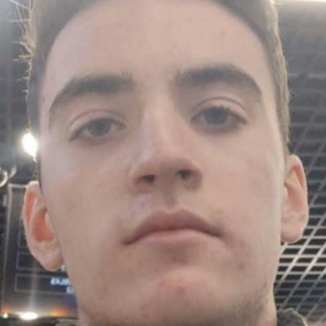
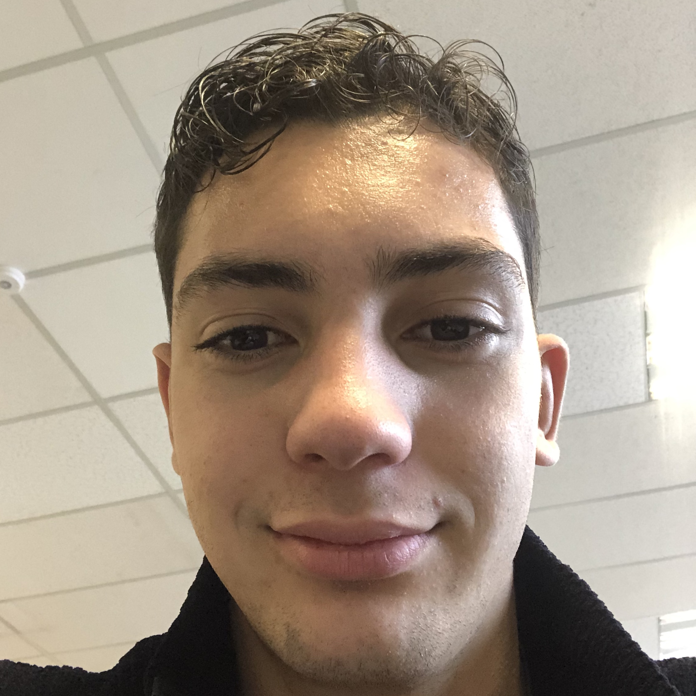

Equipe de TimeShop
Elie Roure
Développeur en chef du projet TimeShop.
Passionné par l'informatique dès son plus jeune âge, il décida de se lancer à l'âge de 18 ans dans le grand bain de l'informatique en créant une entreprise capable de vendre du temps après avoir obtenu son DUT Informatique à l'université de Montpellier.
Thomas Eloy
Développeur pas en chef mais co-concepteur.
Né dans la Banlieue lyonnaise, Thomas a déménagé à l'âge de 12 ans à Montpellier afin de continuer paisiblement ses études. C'est durant son DUT Informatique qu'il rencontrera Elie Roure et décida de le suivre afin de l'aider dans la conception de son magnifique projet.
Léo Marin
Développeur pas en chef du projet TimeShop mais spécialiste GitLab.
Pur produit de la région Occitanie, Léo a pu s'épanouir sous un soleil rayonnant durant toute son enfance. Agé de bientôt 20 ans, Léo est le dernier à avoir rejoint l'équipe, il a été repéré par Thomas durant le mois de Novembre.
Paulin Zumstein
Développeur pas en chef mais co-concepteur.
D'origine martiniquaise, ce jeune homme s'est très vite acclimaté à la France métropolitaine. Après être sorti de son DUT Informatique en tant que Major de promo, il a très vite été recruté par Elie pour ses connaissances en matière de codage html.
